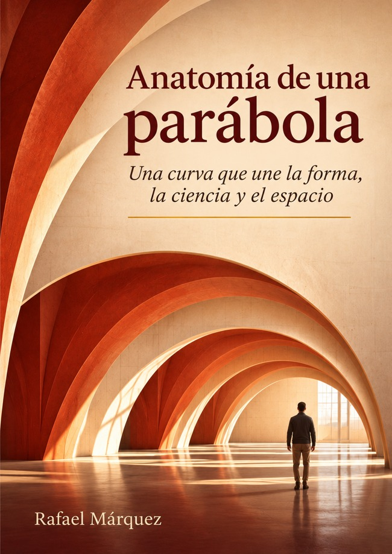

Trayectorias
Modelos ideales y con resistencia del aire, viento horizontal y condiciones directas e inversas.
RECURSOS DIGITALES DE LA OBRA
Una curva que une la forma,
la ciencia y el espacio
Explora el movimiento, contrasta modelos y descubre las conexiones entre la geometría, las matemáticas, la física y sus aplicaciones.
Acceso libre · Sin instalación · Sin registro

PARTE VII · LABORATORIO CIENTÍFICO
El simulador R02 permite explorar el problema fundacional y sus variantes, trabajar con observaciones y generar propuestas académicas.
Modelos ideales y con resistencia del aire, viento horizontal y condiciones directas e inversas.
Importa coordenadas CSV, estima parámetros del modelo y analiza sus residuos.
Genera enunciados de Dibujo Técnico, Matemáticas y Física con condiciones modificables.
MATERIAL COMPLEMENTARIO
Archivos utilizados en el laboratorio del libro. Los registros sintéticos y simulados están identificados expresamente.
Secuencia sintética de 39 fotogramas para el análisis del movimiento.
Descargar MP4BIBLIOGRAFÍA Y CRÉDITOS
Índice electrónico de referencias, documentación, atribuciones y archivos del laboratorio.